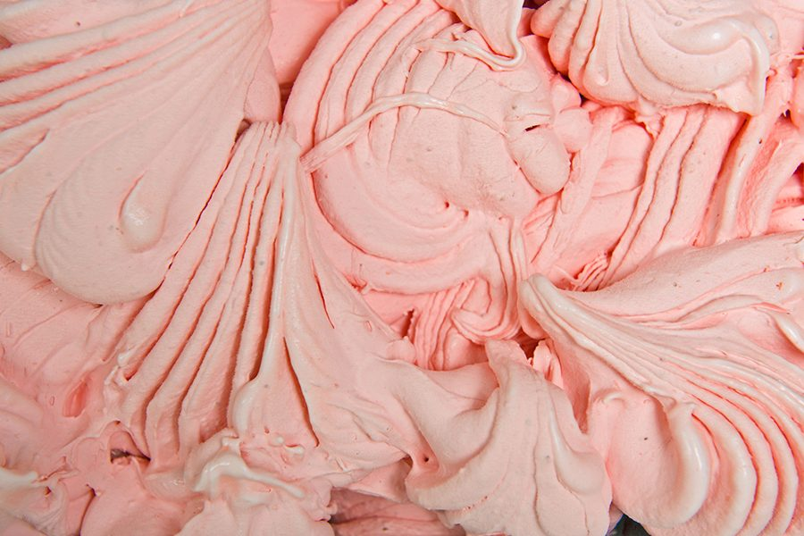
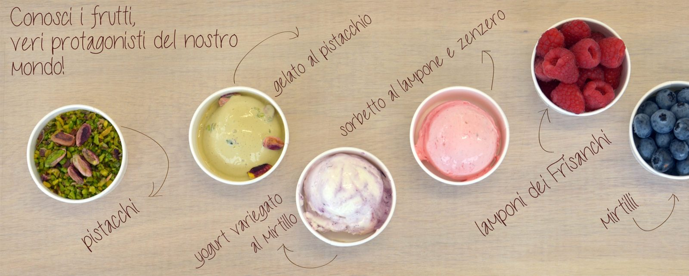
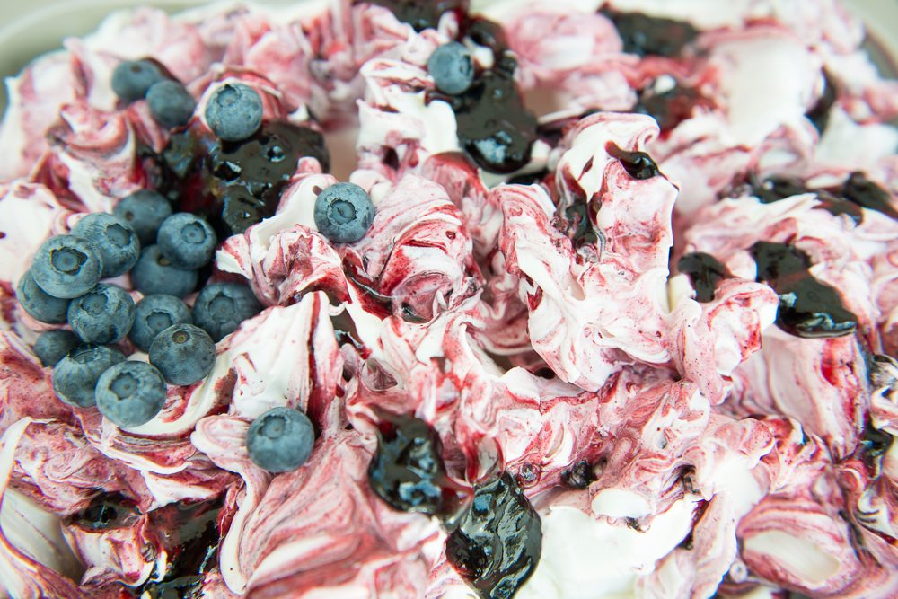
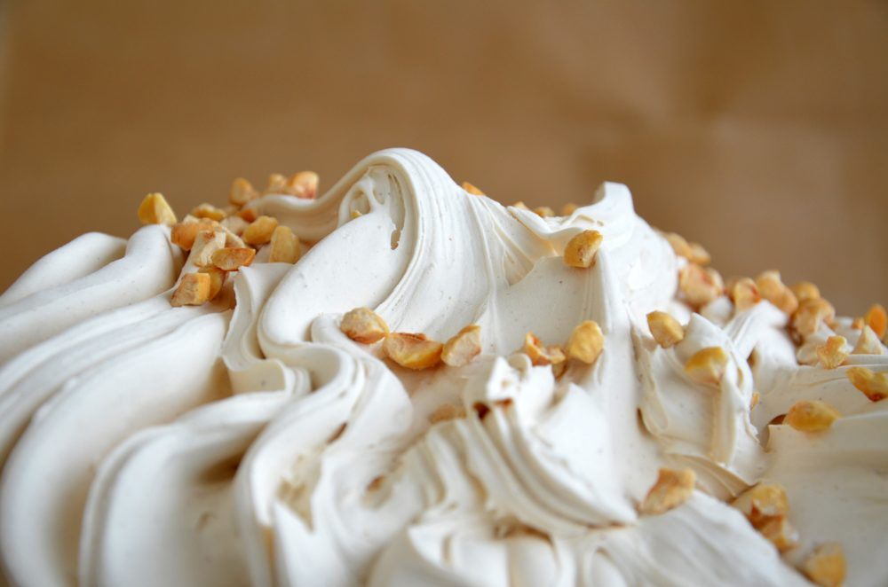
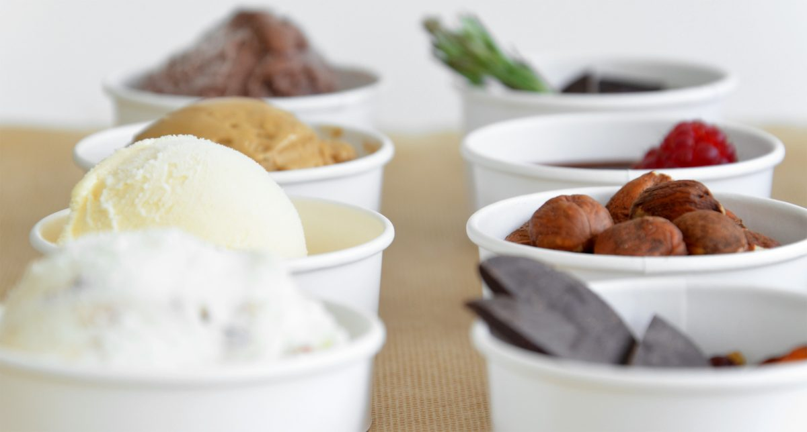

Gelati e sorbetti
- Gelati di stagione
- Gelati variegati
- Gelati alle creme
- Sorbetti di frutta

Gelati, sorbetti, semifreddi, composte e confetture fatti con la frutta fresca che prendiamo direttamente dalle aziende agricole. Ogni gusto ha la sua storia, e ve la raccontiamo.
Ogni coppetta ha il suo cartellino, come sul nostro tavolo.
Fragoledalla Val di Sole
Lamponidai Frisanchi, sotto Folgaria e Lavarone
Ribes neridal Monte Baldo
Menta fresca e basilicodal Monte Baldo
Pescheda Pescantina
Lattedalla filiera trentina
Tutto con la frutta: gelati, sorbetti, semifreddi, salse, confetture, infusi e cioccolate alla frutta.



E poi il panettone e le idee regalo. Per gelaterie e bar c'è l'area clienti per gli ordini.
